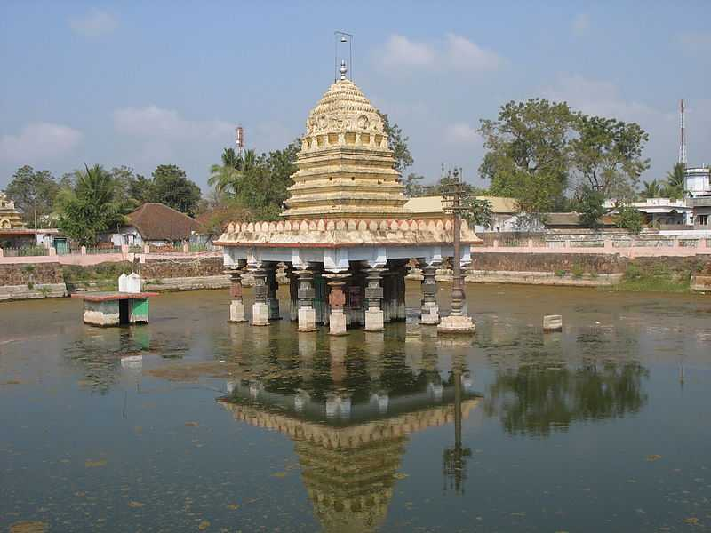
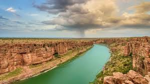

The Kohinoor of India - Where Culture, Heritage, and Natural Beauty Converge
Explore DestinationsAndhra Pradesh boasts a diverse range of destinations from ancient temples to pristine beaches, hill stations to wildlife sanctuaries. Here are some of the most captivating places you shouldn't miss.

Home to the sacred Tirumala Venkateswara Temple, one of the world's most visited religious sites, attracting millions of pilgrims annually.
Explore More
Known as Vizag, this coastal city offers stunning beaches, the INS Kursura submarine museum, and the picturesque Kailasagiri hills.
Explore More
The historic capital with ancient Buddhist stupas and the new planned capital city showcasing modern architectural marvels.
Explore More
The magnificent ruins of the Vijayanagara Empire with hundreds of monuments spread across a surreal boulder-strewn landscape.
Explore More
Famous for its beautiful beaches, the Coringa Wildlife Sanctuary, and as a major port city with a rich maritime history.
Explore More
The cultural capital of Andhra on the banks of Godavari River, known for its Pushkaram festival and historic bridges.
Explore More
Known for its chili production, rich agricultural lands, and historical sites like Amaravati and Kondaveedu Fort.
Explore More
Famous for its sacred temples, scenic hills, and gateway to the Tirumala Hills. Also known for Kadapa stones used in flooring.
Explore More
Renowned for its ancient temples, especially the world-famous Tirupati Balaji Temple and scenic hill ranges.
Explore MoreExperience the best of Andhra Pradesh with our specially designed travel packages that cater to different interests and budgets.

2 Days / 1 Night including temple darshan, prasadam, and local sightseeing.

2 Days / 1 Night scenic coastal getaway including beach and ropeway visit.

2 Days / 1 Night covering Amaravati Stupa, Undavalli Caves, and new capital.

2 Days / 1 Night to relax and enjoy seafood delights and mangroves.

2 Days / 1 Night exploring temples, food, and local arts.

2 Days / 1 Night with river cruise and Papikondalu sightseeing.

2 Days / 1 Night agritourism tour with chili plantations and visits to agri-tech sites.

2 Days / 1 Night spiritual journey to Devuni Kadapa and Pushpagiri temples.

2 Days / 1 Night tour of ancient temples including Kanipakam and Kalikiri.

2 Days / 1 Night walking tour of ruins, temples, and river coracle ride.

3 days/2 nights covering Tirumala Temple, Sri Kalahasti, and Kanipakam.

4 days/3 nights covering RK Beach, Araku Valley, and Borra Caves.

2 days/1 night covering Amaravati Stupa, Undavalli Caves, and new capital.

3 days/2 nights covering Virupaksha Temple, Vittala Temple, and more.

2 days/1 night cruise from Rajahmundry to Pattiseema with cultural shows.
Andhra Pradesh's culture is a vibrant tapestry of art, music, dance, cuisine, and traditions that have evolved over centuries.
Famous for its spicy Andhra meals, Hyderabadi biryani, Gongura pickle, Pootharekulu sweet, and aromatic filter coffee.
Home to classical dance forms like Kuchipudi, Carnatic music, and traditional handicrafts like Kalamkari paintings.
Renowned for Bidriware, Nirmal paintings, Venkatagiri sarees, and exquisite pearl jewelry from Hyderabad.
Celebrations like Sankranti, Ugadi, Dasara, and the grand Tirupati Brahmotsavam attract visitors worldwide.
From the iconic Charminar and Golconda Fort to the ancient temples of Tirupati and Lepakshi, the region reflects a deep historical legacy.
Known for its warm hospitality, traditional attire, rich Telugu literature, and vibrant folk dances like Lambadi and Veeranatyam.
Discover the geographical diversity of Andhra Pradesh from the Eastern Ghats to the Bay of Bengal coastline.
Hear what our visitors have to say about their unforgettable journeys through Andhra Pradesh.
The spiritual energy of Tirupati is unmatched. The temple architecture and the devotion of pilgrims created an atmosphere I'll never forget.

Visakhapatnam's beaches are pristine, and the Araku Valley coffee plantations were a highlight. Perfect blend of nature and culture.

As a history buff, Hampi exceeded all expectations. The scale of the ruins and the stories behind them are absolutely fascinating.

Let us help you plan your perfect trip to this incredible destination. Whether you're seeking spiritual enlightenment, cultural immersion, or natural beauty, we've got you covered.
Get Your Custom Itinerary